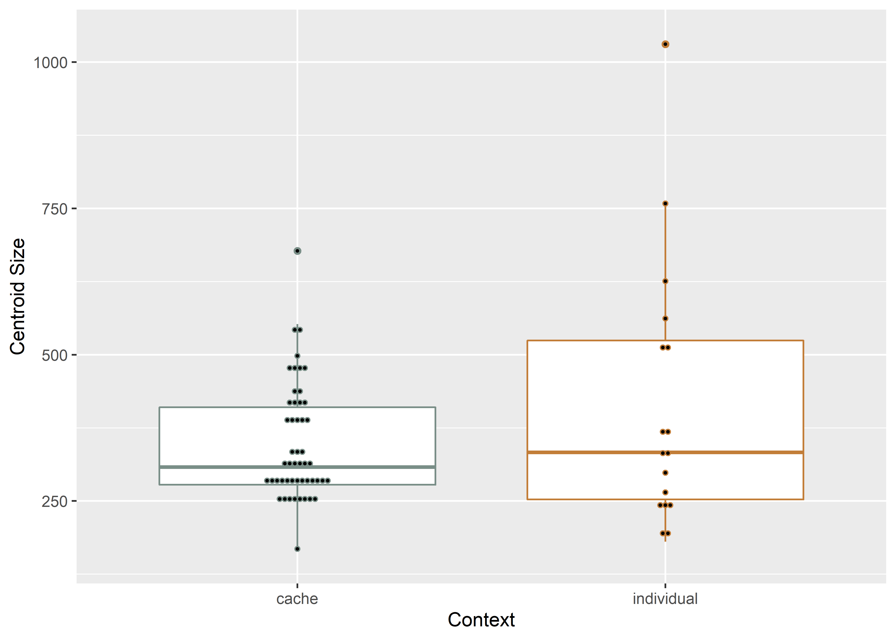
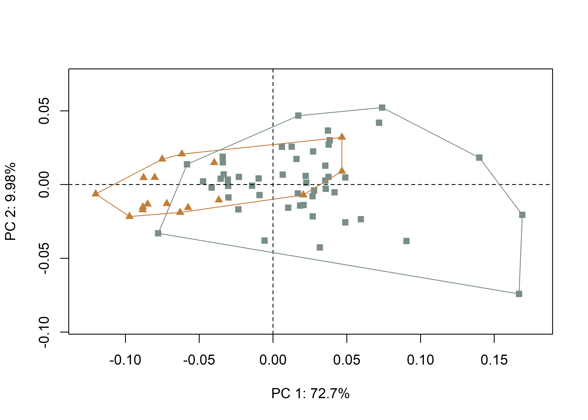
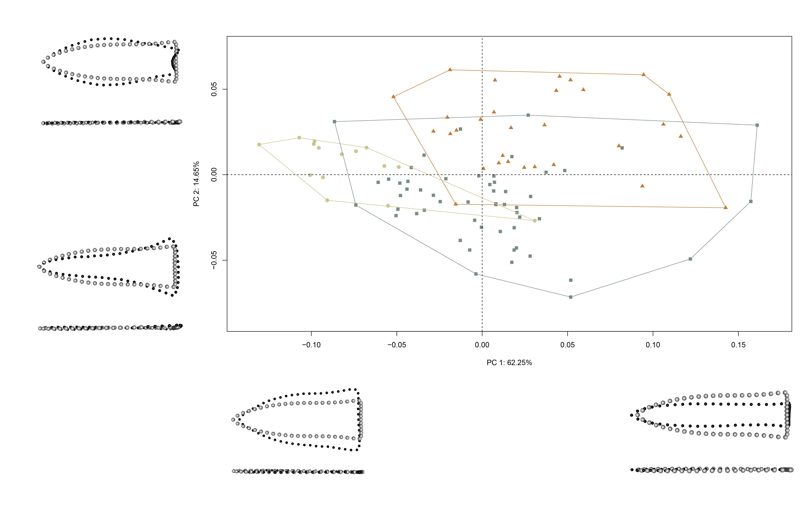
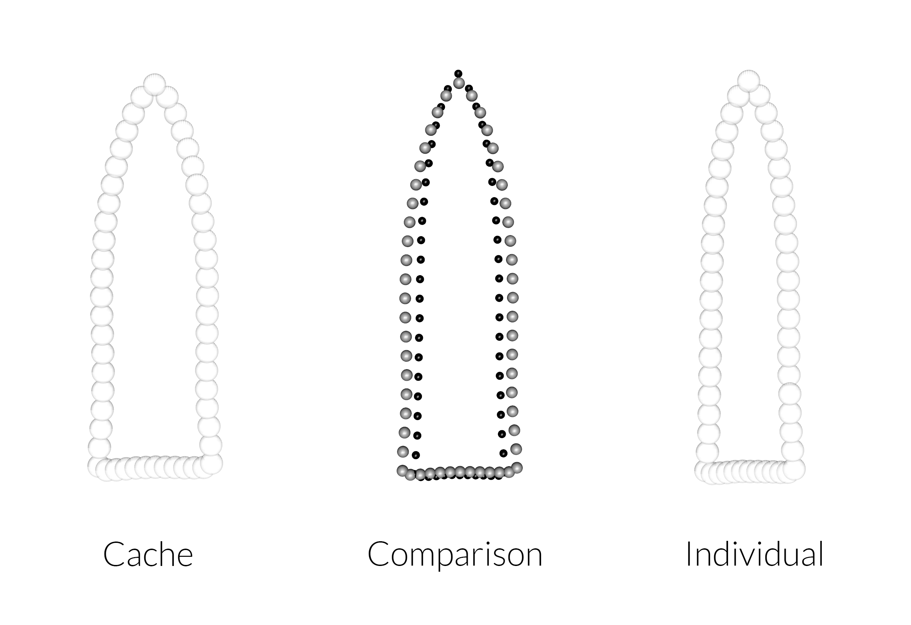

Chapter 6 3DGM - Analysis
This 3D geometric morphometric analysis follows recent analyses of Gahagan biface morphology across the southern Caddo area and central Texas (Selden Jr., Dockall, and Shafer 2018; Selden Jr., Dockall, and Dubied 2020), where Gahagan bifaces were found to differ in shape across the same geography as Caddo bottles (Selden Jr. 2018a, 2018b, 2019, 2021) and Perdiz arrow points (Selden and Dockall, this volume). The analysis, and the two that precede it, builds upon the work of Shafer (1973, 1974, 2006). A succinct overview of the analytical procedures used for this analysis is provided in the manuscript, and the analytical code provided in this document can be used to reproduce the results exactly.
Hypothesis: Gahagan bifaces included in Caddo burials as a cache differ in morphology from those placed atop or alongside an individual.
This hypothesis is tested using Gahagan bifaces recovered from two discrete contexts; one interred as part of a cache, and the other placed atop or alongside individuals. Distinct Caddo burial practices may have constrained local morphological requirements, highlighting differential shape preference.
6.1 Load packages + data
# load libraries
library(here)
library(geomorph)
library(tidyverse)
library(wesanderson)
source('readmulti.csv.R')
# read .csv files
setwd("./data")
filelist <- list.files(pattern = ".csv")
coords <- readmulti.csv(filelist)
setwd("../")
# read qualitative data
qdata <- read.csv("qdata.csv",header = TRUE, row.names = 1)
qdata <- qdata[match(dimnames(coords)[[3]], rownames(qdata)),]6.2 Generalized Procrustes Analysis
Landmark data were aligned to a global coordinate system (Kendall 1981, 1984; Slice 2001), achieved through generalized Procrustes superimposition (Rohlf and Slice 1990) performed in R 4.1.0 (R Core Development Team, 2021) using the geomorph library v. 4.0.0 (Adams et al. 2017; Adams and Otárola-Castillo 2013; Baken et al. 2021). Procrustes superimposition translates, scales, and rotates the coordinate data to allow for comparisons among objects (Gower 1975; Rohlf and Slice 1990). The geomorph package uses a partial Procrustes superimposition that projects the aligned specimens into tangent space subsequent to alignment in preparation for the use of multivariate methods that assume linear space (Rohlf 1999; Slice 2001).
Y.gpa <- gpagen(coords,
PrinAxes = TRUE,
print.progress = FALSE)
## plot gpa
plot(Y.gpa)
## 3D gpa plot
knitr::include_graphics('images/gpa3d.png')
# geomorph data frame
gdf <- geomorph.data.frame(shape = Y.gpa$coords,
size = Y.gpa$Csize,
context = qdata$context)
# add centroid size to qdata
qdata$csz <- Y.gpa$Csize
# attributes for boxplot
csz <- qdata$csz
context <- qdata$context
# palette
pal <- wes_palette("Moonrise2")6.3 Boxplot
# boxplot - centroid size by context
csz.temp <- ggplot(qdata, aes(x = context, y = csz, color = context)) +
geom_boxplot() +
geom_dotplot(binaxis = 'y', stackdir = 'center', dotsize = 0.3) +
scale_color_manual(values = pal) +
theme(legend.position = "none") +
labs(x = 'Context', y = 'Centroid Size')
## render plot
csz.temp## Bin width defaults to 1/30 of the range of the data. Pick better value with `binwidth`.
6.4 Principal Components Analysis
Principal components analysis (Jolliffe 2002) was used to visualise shape variation among the bifaces. The shape changes described by each principal axis are commonly visualized using thin-plate spline warping of a reference 3D mesh (Klingenberg 2013; Sherratt et al. 2014).
# principal components analysis
pca <- gm.prcomp(Y.gpa$coords)
summary(pca)##
## Ordination type: Principal Component Analysis
## Centering by OLS mean
## Orthogonal projection of OLS residuals
## Number of observations: 66
## Number of vectors 65
##
## Importance of Components:
## Comp1 Comp2 Comp3 Comp4
## Eigenvalues 0.00354545 0.0004879563 0.0002164074 0.0001321895
## Proportion of Variance 0.72578649 0.0998891644 0.0443005890 0.0270604221
## Cumulative Proportion 0.72578649 0.8256756552 0.8699762442 0.8970366663
## Comp5 Comp6 Comp7 Comp8
## Eigenvalues 0.0001143175 8.404064e-05 6.702847e-05 5.067751e-05
## Proportion of Variance 0.0234018531 1.720390e-02 1.372135e-02 1.037415e-02
## Cumulative Proportion 0.9204385194 9.376424e-01 9.513638e-01 9.617379e-01
## Comp9 Comp10 Comp11 Comp12
## Eigenvalues 0.0000440233 1.898037e-05 1.736646e-05 1.284811e-05
## Proportion of Variance 0.0090119773 3.885457e-03 3.555074e-03 2.630127e-03
## Cumulative Proportion 0.9707498933 9.746354e-01 9.781904e-01 9.808206e-01
## Comp13 Comp14 Comp15 Comp16
## Eigenvalues 1.100218e-05 8.895681e-06 7.742354e-06 7.187114e-06
## Proportion of Variance 2.252248e-03 1.821028e-03 1.584931e-03 1.471269e-03
## Cumulative Proportion 9.830728e-01 9.848938e-01 9.864788e-01 9.879500e-01
## Comp17 Comp18 Comp19 Comp20
## Eigenvalues 5.664377e-06 5.004952e-06 4.648354e-06 3.900183e-06
## Proportion of Variance 1.159550e-03 1.024560e-03 9.515611e-04 7.984035e-04
## Cumulative Proportion 9.891096e-01 9.901341e-01 9.910857e-01 9.918841e-01
## Comp21 Comp22 Comp23 Comp24
## Eigenvalues 3.195324e-06 2.996739e-06 2.844847e-06 2.666197e-06
## Proportion of Variance 6.541124e-04 6.134602e-04 5.823664e-04 5.457951e-04
## Cumulative Proportion 9.925382e-01 9.931517e-01 9.937340e-01 9.942798e-01
## Comp25 Comp26 Comp27 Comp28
## Eigenvalues 2.337022e-06 2.170575e-06 1.931296e-06 1.785836e-06
## Proportion of Variance 4.784100e-04 4.443368e-04 3.953541e-04 3.655772e-04
## Cumulative Proportion 9.947582e-01 9.952026e-01 9.955979e-01 9.959635e-01
## Comp29 Comp30 Comp31 Comp32
## Eigenvalues 1.586191e-06 1.466620e-06 1.443472e-06 1.200869e-06
## Proportion of Variance 3.247079e-04 3.002307e-04 2.954920e-04 2.458291e-04
## Cumulative Proportion 9.962882e-01 9.965885e-01 9.968839e-01 9.971298e-01
## Comp33 Comp34 Comp35 Comp36
## Eigenvalues 1.134647e-06 1.048795e-06 1.002741e-06 9.456084e-07
## Proportion of Variance 2.322727e-04 2.146980e-04 2.052703e-04 1.935748e-04
## Cumulative Proportion 9.973620e-01 9.975767e-01 9.977820e-01 9.979756e-01
## Comp37 Comp38 Comp39 Comp40
## Eigenvalues 8.204437e-07 7.873510e-07 6.408918e-07 6.223865e-07
## Proportion of Variance 1.679524e-04 1.611780e-04 1.311965e-04 1.274083e-04
## Cumulative Proportion 9.981435e-01 9.983047e-01 9.984359e-01 9.985633e-01
## Comp41 Comp42 Comp43 Comp44
## Eigenvalues 5.776848e-07 5.189095e-07 5.059827e-07 4.682170e-07
## Proportion of Variance 1.182574e-04 1.062256e-04 1.035793e-04 9.584836e-05
## Cumulative Proportion 9.986816e-01 9.987878e-01 9.988914e-01 9.989872e-01
## Comp45 Comp46 Comp47 Comp48
## Eigenvalues 4.472489e-07 4.240362e-07 4.050463e-07 3.713485e-07
## Proportion of Variance 9.155599e-05 8.680412e-05 8.291672e-05 7.601848e-05
## Cumulative Proportion 9.990788e-01 9.991656e-01 9.992485e-01 9.993245e-01
## Comp49 Comp50 Comp51 Comp52
## Eigenvalues 3.532916e-07 3.212258e-07 3.099419e-07 2.623062e-07
## Proportion of Variance 7.232206e-05 6.575789e-05 6.344797e-05 5.369651e-05
## Cumulative Proportion 9.993969e-01 9.994626e-01 9.995261e-01 9.995798e-01
## Comp53 Comp54 Comp55 Comp56
## Eigenvalues 2.582888e-07 2.349982e-07 2.256611e-07 2.057828e-07
## Proportion of Variance 5.287411e-05 4.810630e-05 4.619492e-05 4.212564e-05
## Cumulative Proportion 9.996326e-01 9.996807e-01 9.997269e-01 9.997691e-01
## Comp57 Comp58 Comp59 Comp60
## Eigenvalues 1.806898e-07 1.667148e-07 1.562736e-07 1.462683e-07
## Proportion of Variance 3.698888e-05 3.412806e-05 3.199065e-05 2.994248e-05
## Cumulative Proportion 9.998060e-01 9.998402e-01 9.998722e-01 9.999021e-01
## Comp61 Comp62 Comp63 Comp64
## Eigenvalues 1.314886e-07 1.072852e-07 8.676582e-08 8.44168e-08
## Proportion of Variance 2.691693e-05 2.196227e-05 1.776176e-05 1.72809e-05
## Cumulative Proportion 9.999290e-01 9.999510e-01 9.999687e-01 9.99986e-01
## Comp65
## Eigenvalues 6.824529e-08
## Proportion of Variance 1.397044e-05
## Cumulative Proportion 1.000000e+00# set plot parameters to plot by context
pch.gps.context <- c(15,17)[as.factor(context)]
col.gps.context <- pal[as.factor(context)]
col.hull.context <- c("#C27D38","#798E87")
## plot pca by context 2
pc.plot <- plot(pca, asp = 1,
pch = pch.gps.context,
col = col.gps.context)
shapeHulls(pc.plot,
groups = context,
group.cols = col.hull.context)
6.4.1 Plot PCA with mean shape + x/y maxima/minima
## plot PCA with mean shape (gray) and x/y maxima/minima (black)
knitr::include_graphics('images/cacheind-pca-warpref.png')
6.5 Procrustes ANOVA
A residual randomization permutation procedure (RRPP; n = 10,000 permutations) was used for all Procrustes ANOVAs (Adams and Collyer 2015; Michael L. Collyer and Adams 2018), which has higher statistical power and a greater ability to identify patterns in the data should they be present (Anderson and Ter Braak 2003). To assess whether shape changes with size (allometry), and differs by context (context), Procrustes ANOVAs (Goodall 1991) were also run that enlist effect-sizes (zscores) computed as standard deviates of the generated sampling distributions (M. L. Collyer, Sekora, and Adams 2015).
# MODEL: shape as a function of context
fit.shapecontext <- procD.lm(shape ~ context,
data = gdf,
print.progress = FALSE,
iter = 9999)
# ANOVA: do gahagan biface shapes differ by context?
anova(fit.shapecontext)##
## Analysis of Variance, using Residual Randomization
## Permutation procedure: Randomization of null model residuals
## Number of permutations: 10000
## Estimation method: Ordinary Least Squares
## Sums of Squares and Cross-products: Type I
## Effect sizes (Z) based on F distributions
##
## Df SS MS Rsq F Z Pr(>F)
## context 1 0.06679 0.066785 0.21033 17.047 3.1553 1e-04 ***
## Residuals 64 0.25074 0.003918 0.78967
## Total 65 0.31752
## ---
## Signif. codes: 0 '***' 0.001 '**' 0.01 '*' 0.05 '.' 0.1 ' ' 1
##
## Call: procD.lm(f1 = shape ~ context, iter = 9999, data = gdf, print.progress = FALSE)# MODEL: size as a function of context
fit.sizecontext <- procD.lm(size ~ context,
data = gdf,
print.progress = FALSE,
iter = 9999)
# ANOVA: do gahagan biface sizes differ by context?
anova(fit.sizecontext)##
## Analysis of Variance, using Residual Randomization
## Permutation procedure: Randomization of null model residuals
## Number of permutations: 10000
## Estimation method: Ordinary Least Squares
## Sums of Squares and Cross-products: Type I
## Effect sizes (Z) based on F distributions
##
## Df SS MS Rsq F Z Pr(>F)
## context 1 10400 10400 0.01138 0.7365 0.32696 0.3933
## Residuals 64 903652 14120 0.98862
## Total 65 914052
##
## Call: procD.lm(f1 = size ~ context, iter = 9999, data = gdf, print.progress = FALSE)6.6 Morphological disparity
# does one context display greater **shape** variation among
# individuals relative to the other group?
morphol.disparity(fit.shapecontext,
groups = qdata$context,
data = gdf,
print.progress = FALSE,
iter = 9999)##
## Call:
## morphol.disparity(f1 = fit.shapecontext, groups = qdata$context,
## iter = 9999, data = gdf, print.progress = FALSE)
##
##
##
## Randomized Residual Permutation Procedure Used
## 10000 Permutations
##
## Procrustes variances for defined groups
## cache individual
## 0.004027607 0.003084870
##
##
## Pairwise absolute differences between variances
## cache individual
## cache 0.0000000000 0.0009427367
## individual 0.0009427367 0.0000000000
##
##
## P-Values
## cache individual
## cache 1.0000 0.5627
## individual 0.5627 1.0000# does one context display greater **size** variation among
# individuals relative to the other group?
morphol.disparity(fit.sizecontext,
groups = qdata$context,
data = gdf,
print.progress = FALSE,
iter = 9999)##
## Call:
## morphol.disparity(f1 = fit.sizecontext, groups = qdata$context,
## iter = 9999, data = gdf, print.progress = FALSE)
##
##
##
## Randomized Residual Permutation Procedure Used
## 10000 Permutations
##
## Procrustes variances for defined groups
## cache individual
## 9620.881 26412.997
##
##
## Pairwise absolute differences between variances
## cache individual
## cache 0.00 16792.12
## individual 16792.12 0.00
##
##
## P-Values
## cache individual
## cache 1.000 0.015
## individual 0.015 1.0006.7 Mean shapes
# subset landmark coordinates to produce mean shapes for contexts
new.coords <- coords.subset(A = Y.gpa$coords,
group = qdata$context)
names(new.coords)## [1] "cache" "individual"## plot shape means
mean <- lapply(new.coords, mshape)
plot(mean$cache)
plot(mean$individual)
# comparison plots
plotRefToTarget(mean$cache,
mean$individual,
method = "points",
mag = 1)
## 3D plot - final figure
knitr::include_graphics('images/mshape-cache-ind.jpg')